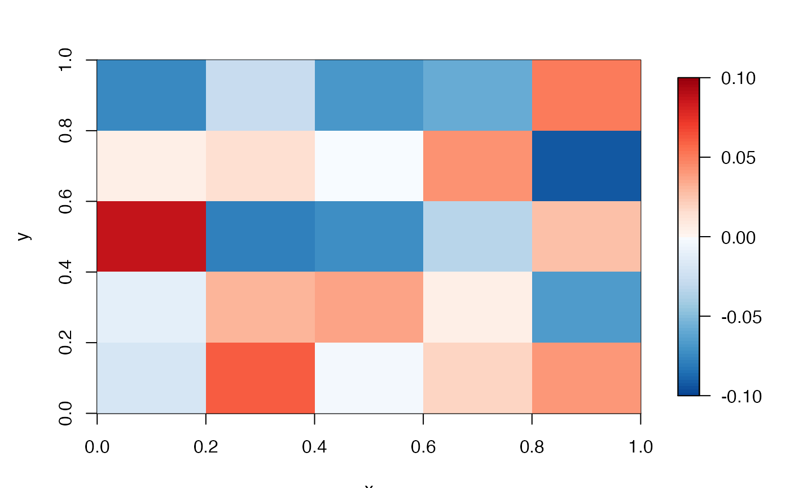

This function creates the `split-heat' colour scheme. For a user-defined range (zlim) that spans a `splitting' value (i.e., split = 0), the function returns a dichotomous vector of colours that distinguishes values either side of that value. By default, blue colours are returned for values below split (e.g., negative numbers) and red colours are returned for values above split (e.g., positive numbers).
pretty_cols_split_heat( zlim, split = 0, scheme_cold = "Blues", scheme_hot = "Reds", select_cold = 1:8, select_hot = 1:8, n_breaks = 100 )
| zlim | A numeric range that the colour scheme should span. |
|---|---|
| split | A number that divides the colour scheme. The default is |
| scheme_cold | A character that defines the colour scheme for numbers below |
| scheme_hot | A character that defines the colour scheme for numbers above |
| select_cold, select_hot | Integer vectors that define which colours to draw from |
| n_breaks | The number of breaks in the colour scheme. |
The function returns a named list that contains the z limits (`zlim'), a numeric vector of breaks (`breaks') and the associated vector of colours (`col'). This can be passed to image.plot.
This function is designed to work in conjunction with image.plot.
Edward Lavender
# Generate a raster with positive and negative numbers nrw <- ncol <- 5 n <- nrw * ncol zlim <- c(-0.1, 0.1) m <- matrix(runif(n, zlim[1], zlim[2]), nrow = nrw, ncol = ncol) r <- raster::raster(m) # Define colours col_param <- pretty_cols_split_heat(zlim = zlim, n_breaks = 100) # Visualise raster with colour scheme fields::image.plot(r, zlim = col_param$zlim, breaks = col_param$breaks, col = col_param$col)